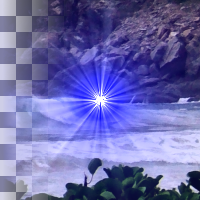

Supernova
This plug-in produces an effect like a supernova burst. The amount of the light effect is approximately in proportion to 1/r, where r is the distance from the center of the star.
Center X
X coordinates of the center of supernova
name: center-x
type: double
default: 0.50
minimum: -inf
maximum: +inf
ui-minimum: 0.00
ui-maximum: 1.00
ui-gamma: 1.00
ui-step-small: 0.00
ui-step-big: 0.10
ui-digits: 3
unit:relative-coordinate
axis:x
Center Y
Y coordinates of the center of supernova
name: center-y
type: double
default: 0.50
minimum: -inf
maximum: +inf
ui-minimum: 0.00
ui-maximum: 1.00
ui-gamma: 1.00
ui-step-small: 0.00
ui-step-big: 0.10
ui-digits: 3
unit:relative-coordinate
axis:y
Radius
Radius of supernova
name: radius
type: int
default: 20
minimum: 1
maximum: 20000
ui-minimum: 1
ui-maximum: 1000
ui-gamma: 1.00
ui-step-small: 1
ui-step-big: 100
unit:pixel-distance
Number of spokes
Number of spokes
name: spokes-count
type: int
default: 100
minimum: 1
maximum: 1024
ui-minimum: 1
ui-maximum: 1024
ui-gamma: 1.00
ui-step-small: 1
ui-step-big: 100
Random hue
Random hue
name: random-hue
type: int
default: 0
minimum: 0
maximum: 360
ui-minimum: 0
ui-maximum: 360
ui-gamma: 1.00
ui-step-small: 1
ui-step-big: 10
Color
The color of supernova.
name: color
type: color
default: rgb(0.0000, 0.0000, 1.0000)
Random seed
The random seed for spokes and random hue
name: seed
type: seed
default: 0
minimum: 0
maximum: +inf
pads: input output
parent-class: GeglOperationPointFilter
categories: light
source: operations/common-gpl3+/supernova.c
license: GPL3+
 This page is part of the online GEGL Documentation, GEGL is a data flow based image processing library/framework, made to fuel GIMPs high-bit depth non-destructive editing future.
This page is part of the online GEGL Documentation, GEGL is a data flow based image processing library/framework, made to fuel GIMPs high-bit depth non-destructive editing future.